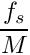
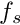
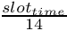
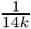
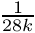
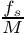
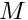

|
My Project
|
This document adds to the intergration of how to build and run the project.
To run the project, the cmake file is needed along with the fftw library. Currently running cmake will generate the makefile needed to build the project.
The IQ file reading will not be covered here since the plan is to replace the IQ file with a buffer providing active feedback through a UDP server. The app will run and capture samples when given the command from the xApp to do so.
The SFFT function is used to transform the IQ data into the frequency domain. The function is called with the IQ data and the size of the data. The first portion of the code calculates the proper window size to maintain a resoultion of equal measure across both frequency and time domain. The frequency resolution can be given by the formula

where N is the length of the window and  is the sample rate. Within a 5G signal it is cut into discreate chunks of SCS (Subcarrier Spacing) and since the signal is cyclic prefix it will repeat to space each signal since it using OFDM (Orthogonal Frequency Division Multiplexing). A table was made for ease of reference.
A single slot contains 14 OFDM symbols meaning that the depending on SCS the formula to determine the smallest unit in time domain is  with the inverse being the smallest possible dicreate. in the frequency domain.
The window length to make claculation faster is all powers of 2 which to save on calculation time, a LUT is created with
Since the maximum frequency resolution is dependent on the bandwidth an algorigthmic method is needed to determine the
For 40 MHz
| SCS | Slot Time | Max Frequency Resolution | Max Time Resolution |
|---|---|---|---|
| 15 | 1ms | 14kHz |  |
| 30 | 0.5ms | 28Khz |  |
The max number of samples within a resource block will vary greatly depending on the SCS to avoid the max resolution in a single domain the window length should be to capture within at least 30 subframes. The window length is calculated by the following formula  where is the sample rate and  is the window length.
This portion of the code is used to create the windowed samples to be used in the FFT. The windowed samples are then stored in the in array, which allows for the FFT to be performed. The fftw function used is
The output of the FFT is then stored in the out array. Only half of the out array is stored to avoid redundancy. The output is then stored in the fftData array. Since we take the absolute value of the complex number, the struct contains two extra vectors which are the stft structure.
The way the data is stored within the first array as a absolute value with the power in dB which creates ease of use and reference as a comparsion for debugging purposes.
The executable will convert all the named binary file from the IQ folder to the database folder as a hdf5 file. The hdf5 file is simple in structure as a 2D array with the rows and coloumns serving as the window and frequency bins respectivly.